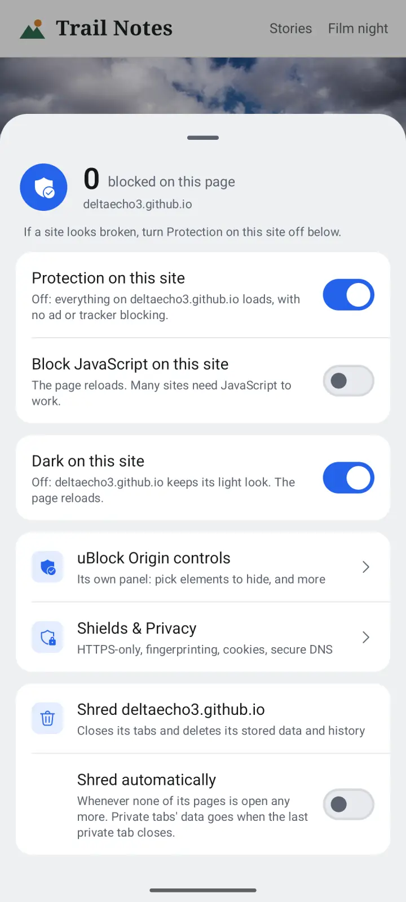
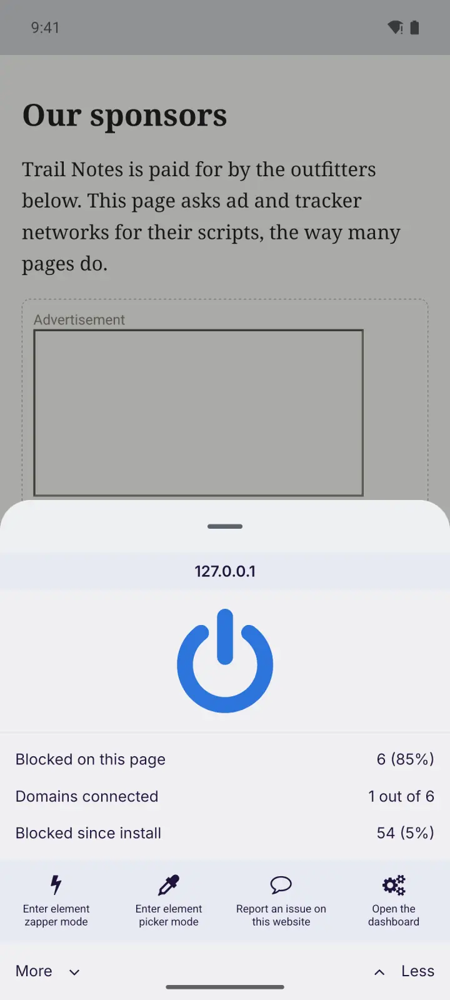

See what was blocked, and let a broken site through
How-to
Wayward uses its built-in uBlock Origin to block ads and trackers on every page: in regular tabs, private tabs and link previews. You don't need another blocker. The shield button in the address bar shows what it caught on the page you're on, and lets you change things for that one site.
Open the shield sheet
Tap the round shield at the end of the address bar (TalkBack: Shields). The badge on its corner counts what was blocked on this page.
The sheet shows:
- the count, in big digits, blocked on this page, and the site,
- "Sites blocked" and a number: tap it to see which sites were blocked and how often (the busiest hundred),
- Protection on this site and Block JavaScript on this site,
- Dark on this site, while Wayward is darkening websites,
- what you allowed or blocked for this site (notifications, protected video), each with Forget,
- uBlock Origin controls and Shields & Privacy,
- "Shred" and the site's name, and Shred automatically (see clear data, Shred and Emergency delete).

A site looks broken? Let it through
If a page is blank, a button does nothing, or a sign-in won't work, blocking may be the cause:
- Tap the shield.
- Turn off Protection on this site. Everything on that site then loads, with no ad or tracker blocking, and the page reloads.
- If it works now, leave it off for that site only. Every other site stays protected.
If it still doesn't work, turn protection back on: the problem is somewhere else. You can tell us about the site in Settings > Send feedback.
Other things to try:
- If you blocked JavaScript, turn off Block JavaScript on this site. Many sites need it. The page reloads.
- If Wayward darkens the site and it looks wrong, turn off Dark on this site to keep it light.
- Pick a lighter Ad blocking level in Settings > Shields & Privacy (see choose how much Wayward blocks).
uBlock Origin's own panel
uBlock Origin controls opens uBlock Origin's own panel in a sheet. From there you can, for example, pick a part of the page to hide for good. It's uBlock Origin's own screen, so it looks different from the rest of Wayward.

What you told this site
If a site asked to send notifications or play protected video, your answer shows on the sheet with Forget. Forget it and the site asks again next time. All your answers are listed in Settings > Site permissions (see site permissions).
In a private tab
The sheet has no per-site switches there. It says per-site ad blocking and JavaScript are set in regular tabs, since uBlock Origin keeps them on your phone. To turn blocking off for one site in a private tab, use uBlock Origin controls.
A link preview's shield shows the count too, and says ads and trackers are blocked in previews as well. Open the page in Wayward for uBlock Origin controls and shredding.
More in Privacy & security
- Lock Wayward down
- Choose how much Wayward blocks
- Hide pop-ups and overlays on pages
- Secure connections, Secure DNS and the other privacy settings
- Camera, notifications and other site permissions
- Use private tabs
- Keep sign-ins apart with spaces
- Lock a tab, your private tabs, a space or Downloads
- Clear data, Shred a site, or delete everything